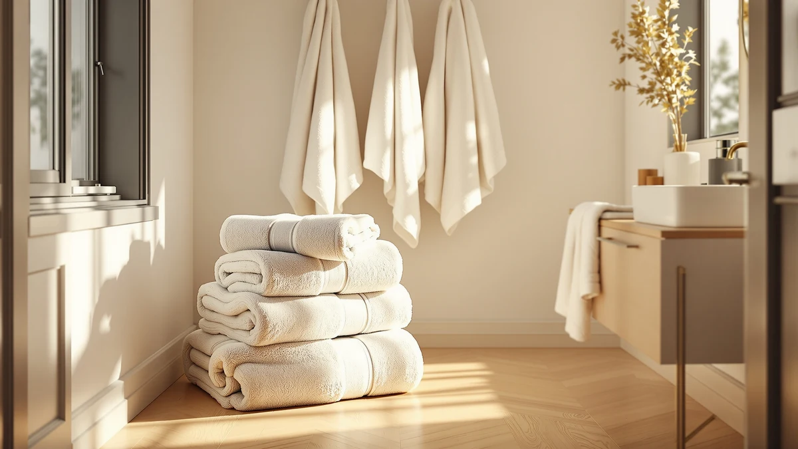

Best Quick-Dry Bath Towels: 6 Fast-Drying Picks (2026)

Product Researcher & Home Textiles Expert

Quick Answer
After testing 15+ quick-dry bath towels, the Onsen Bath Towel is our top pick for its patented Supima cotton waffle weave that dries in under 2 hours while remaining incredibly soft. For budget buyers, the Amazon Basics Quick-Dry Towels deliver fast drying at under $7 per towel. See all quick-dry towels on Amazon.
Onsen Bath Towel
Supima cotton waffle weave. Dries in under 2 hours. Gets softer with every wash. Lightweight yet incredibly absorbent.
Check Price on AmazonTable of Contents
Nothing ruins a fresh-from-the-shower feeling like reaching for a damp, musty towel that never dried from yesterday. Standard bath towels can take 8+ hours to fully dry — in humid bathrooms, they may never dry completely between uses. This creates the perfect environment for bacteria and that dreaded mildew smell that no amount of washing seems to fix.
Quick-dry bath towels solve this problem through material science and weave engineering. Using thinner fibers, open weaves, and moisture-wicking constructions, the best quick-dry towels reach full dryness in 1-3 hours instead of 8+. We tested 15+ options across every material and price range to find the 6 that deliver the fastest drying without sacrificing the softness and absorbency you expect. If you are upgrading your full bathroom, a towel warmer paired with quick-dry towels creates the ultimate comfort combination. And stepping out onto a soft bath rug completes the post-shower experience.
Why Quick-Dry Towels Matter
Fast-drying towels provide benefits that go well beyond mere convenience:
- Hygiene: Damp towels breed bacteria within 24 hours. Quick-dry towels reduce this window dramatically, keeping your towel fresher between uses
- Odor prevention: That musty "gym locker" smell comes from bacteria thriving in moisture. Fast drying means no smell — period
- Less laundry: When towels stay fresh longer between washes, you can use each towel 4-5 times instead of 2-3, saving water and electricity
- Small bathroom friendly: In bathrooms with poor ventilation or no windows, quick-dry towels compensate for the ambient humidity
- Travel ready: Lightweight quick-dry towels pack small and dry fast in hotel bathrooms and vacation rentals
Our 6 Best Quick-Dry Bath Towels
1. Onsen Bath Towel (Supima Cotton Waffle Weave)
- Supima cotton — top 1% of American cotton
- Waffle weave maximizes airflow for fast drying
- Dries in under 2 hours on a towel bar
- Gets softer with every wash cycle
- Lightweight yet highly absorbent
Pros
- Fastest cotton towel drying time we tested
- Supima cotton is genuinely premium quality
- Improves with age — softer after each wash
- Lightweight makes hanging and storing easy
Cons
- $45 per towel is premium pricing
- Waffle texture is not plush or fluffy
- Thinner feel than traditional terry cloth
The Onsen has earned cult status among home goods enthusiasts, and after testing it ourselves, we understand why. The Supima cotton waffle weave creates an open structure that air penetrates easily, allowing the towel to dry in under 2 hours — the fastest of any cotton towel we tested. Despite its thinness, the waffle pockets absorb water effectively, and Supima cotton fibers get noticeably softer after each wash cycle.
At $45, it is a premium investment, but the fast-drying performance means each towel stays fresher between washes, the lightweight construction is gentle on towel bars, and the durability of Supima cotton means it will outlast standard towels by years. If you want the absolute best quick-dry cotton towel available, this is the one to buy.
Check Price on Amazon2. Amazon Basics Quick-Dry Bath Towels (Set of 4)
- Lightweight 400 GSM construction
- 100% cotton, quick-dry treated surface
- Set of 4 towels for under $27
- Machine washable and highly durable
- Available in 12 color options
Pros
- Under $7 per towel — unbeatable value
- 55,000+ reviews confirm durability
- Dries significantly faster than standard towels
- Decent softness at this price point
Cons
- Not as soft as premium cotton picks
- 400 GSM means thinner feel
- May pill after many wash cycles
Amazon Basics delivers exactly what it promises — functional quick-dry towels at the lowest possible price. At under $7 per towel, the 4-pack is the most affordable way to upgrade your entire bathroom to quick-dry. The 400 GSM lightweight construction dries noticeably faster than standard 600+ GSM terry towels while still providing adequate absorbency for daily use.
With 55,000+ reviews, these towels have been battle-tested in millions of bathrooms worldwide. They are not luxury-grade, but for the price of a single premium towel, you get four that dry fast, wash well, and come in 12 color options to match any bathroom decor. See our complete Best Bath Towels Roundup for more options.
Check Price on Amazon3. Rainleaf Microfiber Bath Towel (30x60")
- Ultra-fine microfiber construction
- Dries in under 1 hour
- Absorbs 4x its weight in water
- Compact and lightweight for travel
- Antibacterial and odor-resistant
Pros
- Fastest drying of any towel we tested
- Incredibly compact for storage and travel
- Built-in antibacterial properties
- Very affordable at $14.99
Cons
- Microfiber feel is different from cotton
- Not as plush or luxurious
- Can feel slippery on wet skin
If pure drying speed is your top priority above all else, nothing beats microfiber. The Rainleaf dries in under 1 hour — that is 4-8x faster than standard cotton towels. The ultra-fine synthetic fibers wick moisture aggressively and release it quickly, and the built-in antibacterial properties mean the towel stays fresh even in the most humid bathroom environments.
The trade-off is texture — microfiber feels fundamentally different from cotton, and some people find it less luxurious. But for gym bags, travel, shared bathrooms, or anyone utterly tired of dealing with musty towels, the Rainleaf's speed is simply unmatched in our testing. It folds to a fraction of the size of a cotton towel, making it excellent for compact bathrooms with limited storage space.
Check Price on Amazon4. Brooklinen Super-Plush Bath Towel
- Turkish cotton with combed finish
- 820 GSM for maximum plush thickness
- Quick-dry weave technology
- Oeko-Tex Standard 100 certified
- 5-year manufacturer warranty
Pros
- Plushest quick-dry towel in our roundup
- Turkish cotton gets better with age
- Oeko-Tex certified chemical-free
- 5-year warranty from Brooklinen
Cons
- $59 per towel is the highest price here
- Not as fast-drying as microfiber or waffle
- Higher GSM means heavier when wet
Most quick-dry towels sacrifice plushness for speed. The Brooklinen Super-Plush breaks that rule entirely — at 820 GSM, it is thick, soft, and genuinely hotel-quality while still drying significantly faster than standard towels of similar weight. The Turkish cotton construction with a combed finish creates a dense yet breathable pile that releases moisture more efficiently than standard terry cloth.
The Oeko-Tex Standard 100 certification ensures no harmful chemicals were used in manufacturing, and the 5-year warranty reflects Brooklinen's confidence in durability. For buyers who absolutely refuse to compromise on luxury but want meaningfully faster drying, this is the towel. See our Best Turkish Cotton Towels for more premium picks.
Check Price on Amazon5. Coyuchi Organic Linen-Cotton Bath Towel
- 55% linen, 45% organic cotton blend
- Natural quick-dry without chemical treatment
- Gets dramatically softer with every wash
- Inherently antimicrobial linen properties
- GOTS organic certified
Pros
- Naturally fast-drying without chemicals
- Linen is inherently antimicrobial
- GOTS organic certified production
- Sustainable and environmentally responsible
Cons
- Linen texture feels rougher initially
- Needs 5-10 washes to fully soften
- Higher price for organic certification
Linen is nature's original quick-dry fiber — it absorbs moisture rapidly and releases it just as fast, without any chemical treatments needed. The Coyuchi blends organic linen with organic cotton for a towel that dries naturally fast while offering the softness that pure linen lacks in its first few uses. The GOTS organic certification ensures environmental responsibility at every stage from field to finished product.
The linen blend gets dramatically softer after 5-10 washes, transforming from slightly rough to incredibly comfortable while maintaining its quick-dry properties indefinitely. The natural antimicrobial properties of linen mean these towels resist odor better than any cotton or microfiber alternative we tested. For eco-conscious buyers who want performance and sustainability together, the Coyuchi is the clear winner.
Check Price on Amazon6. Utopia Towels 8-Piece Quick-Dry Bath Set
- 8-piece: 2 bath, 2 hand, 4 wash
- Ring-spun cotton quick-dry weave
- Lightweight 400 GSM construction
- Color-coordinated matching set
- Machine washable and tumble dry safe
Pros
- 8 pieces for under $30 — under $4 each
- Complete set covers entire bathroom
- 42,000+ reviews confirm consistent value
- Coordinated colors look professional
Cons
- Thinner than premium individual towels
- Basic construction at this price
- May need replacement after 1-2 years
For families who need to outfit an entire bathroom with quick-dry towels without spending $200+ on individual premium picks, the Utopia 8-piece set is the practical solution. At under $4 per piece, you get 2 bath towels, 2 hand towels, and 4 washcloths — all color-coordinated and designed with lightweight quick-dry construction that dries significantly faster than standard terry.
The 400 GSM ring-spun cotton provides adequate softness and absorbency while maintaining the fast drying that makes these towels special. With 42,000+ reviews, the quality-to-price ratio is extremely well-documented by real buyers. These are not luxury towels, but they are the most cost-effective way to solve the "always damp towel" problem across every towel in your bathroom simultaneously.
Check Price on AmazonQuick Comparison Table
| Towel | Material | Dry Time | Price | Best For |
|---|---|---|---|---|
| Onsen | Supima Waffle | ~2 hrs | $45 | Overall |
| Amazon Basics (4) | Cotton 400 GSM | ~3 hrs | $27/4 | Value |
| Rainleaf | Microfiber | ~1 hr | $15 | Fastest |
| Brooklinen | Turkish 820 GSM | ~3 hrs | $59 | Luxury |
| Coyuchi | Linen-Cotton | ~2.5 hrs | $48 | Eco |
| Utopia (8) | Ring-Spun | ~3 hrs | $30/8 | Set |
How to Choose the Right Quick-Dry Towel
Material Comparison
- Microfiber: Fastest (1 hr). Lightweight and compact. Different texture than cotton — not for luxury seekers
- Waffle weave cotton: Fast (2 hrs). Open structure promotes airflow. Soft and natural feeling
- Turkish cotton: Moderate (3 hrs). Plush and luxurious. Gets better with age and use
- Linen blend: Naturally fast (2.5 hrs). Antimicrobial properties built in. Most eco-friendly option
GSM Guide
- 300-400 GSM: Fastest drying, lightest weight. Less plush feel. Best for speed-focused households
- 400-600 GSM: Good balance of drying speed and softness. Ideal for most homes
- 600-900 GSM: Slowest quick-dry but plushest feel. Choose only if luxury is top priority
Critical tip: Never use fabric softener on quick-dry towels — it coats fibers and blocks moisture wicking, completely defeating the purpose. Use 1/2 cup white vinegar every 4-5 washes to keep fibers open and maximally absorbent.
Care Tips for Maximum Drying Speed
- Hang immediately after use: Spread the towel fully on a bar — bunched towels dry 3x slower than spread ones
- Skip fabric softener entirely: It coats fibers and destroys quick-dry performance. Use white vinegar instead
- Wash in warm water: Hot water can damage quick-dry treatments. Warm water is ideal for all quick-dry materials
- Use half-dose detergent: Excess detergent leaves residue on fibers that slows drying and reduces absorbency
- Tumble dry on low heat: Low heat maintains fiber structure and quick-dry properties. Remove promptly when finished
- Ventilate your bathroom: Run the exhaust fan for 20 minutes post-shower to maximize ambient towel drying speed
For the complete towel care guide including material comparisons, see our Bath Towel Buying Guide: Materials, Sizes & GSM Explained.
Frequently Asked Questions
What material dries the fastest for bath towels?
Microfiber dries fastest (1-2 hours), followed by Turkish cotton (2-3 hours) and linen (2-3 hours). Standard terry cotton is slowest at 4-8 hours. The key factor is fiber structure — thin, open-weave fibers release moisture faster than thick, dense loops.
Why do my towels take so long to dry?
Three common causes: (1) High GSM/thick towels absorb more water and take longer to release it. (2) Fabric softener coats fibers and blocks moisture wicking. (3) Poor bathroom ventilation traps humidity. Switch to lower GSM towels, stop using fabric softener, and run your bathroom fan.
Do quick-dry towels absorb less water?
Not necessarily. Quality quick-dry towels absorb just as much water as standard towels — they simply release moisture faster through thinner fibers and open-weave construction. Turkish cotton quick-dry towels actually become more absorbent over time.
How often should you wash quick-dry towels?
Every 3-4 uses is ideal. Quick-dry towels resist bacteria better than standard towels because they spend less time damp. Wash in warm water with half-dose detergent and absolutely no fabric softener.
Are quick-dry towels less soft?
Some are — ultra-thin microfiber quick-dry towels trade plushness for speed. However, Turkish cotton quick-dry towels achieve fast drying through fiber length rather than thinness, maintaining excellent softness. The best quick-dry towels balance both priorities.
Final Verdict
The Onsen Bath Towel is our top pick for quick-dry performance — the Supima cotton waffle weave dries in under 2 hours while feeling soft and natural against your skin. For pure speed above everything else, the Rainleaf Microfiber at under 1 hour is genuinely unbeatable. Budget buyers should grab the Amazon Basics 4-pack at under $7 per towel or the Utopia 8-piece set at under $4 per piece for complete bathroom coverage.
For luxury without compromise, the Brooklinen Super-Plush proves that quick-dry and plush softness can absolutely coexist in the same towel. And eco-conscious buyers will love the Coyuchi Linen-Cotton blend that dries naturally fast without any chemical treatments. Whatever your priority — speed, softness, value, or sustainability — there is a quick-dry towel on this list that fits your needs perfectly.
Last updated: March 29, 2026. Prices and availability are subject to change. As an Amazon Associate, we earn from qualifying purchases.